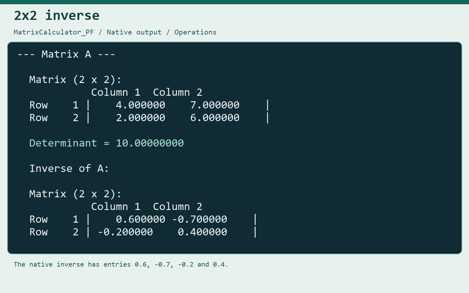

Programming Fundamentals / C++17
Matrix Calculator
A 19-option native console project with row-equilibrated elimination, recorded execution results and an interactive browser calculator.

Live Links
| What | Link |
|---|---|
| Repository | https://github.com/rohaan2802/MatrixCalculator_PF |
| GitHub Pages | https://rohaan2802.github.io/MatrixCalculator_PF/ |
| CMake tutorial | https://cmake.org/cmake/help/latest/guide/tutorial/index.html |
Contents
Overview
MatrixCalculator_PF is a C++17 square-matrix console calculator developed from a Programming Fundamentals project at FAST-NUCES. It retains 19 menu options and supports matrices from 1x1 to 10x10 using fixed-size double arrays.
The maintained version adds a reproducible CMake build, numerical regression checks, real executable transcripts, and an interactive browser implementation. The native application and browser playground have separate entry points, with the same row-equilibrated elimination approach for determinant, inverse, solve and rank.
Architecture and Design
The project is split into four deliberate layers: the native application owns the original interactive workflow, the browser layer provides a zero-install demonstration, the evidence layer records repeatable outputs, and the presentation layer turns those outputs into a reviewable portfolio.
The C++ and browser calculators share the same numerical choices—row equilibration, partial pivoting, finite-value checks and bounded 1–10 dimensions—but remain separate entry points so the native assignment stays easy to compile and inspect. The replay data is the contract between the executable and the evidence gallery.
This separation keeps the demo honest: figures are generated from captured executable output, while the browser playground is clearly labelled as a live local calculation. A recruiter can inspect one source file, run one build command, reproduce the test cases and then explore the UI without credentials or a service dependency.
| Layer | Responsibility | Primary files |
|---|---|---|
| Native application | 19-option console workflow and numerical operations | src/matrix_calculator.cpp |
| Verification | Known inputs, regression assertions and replayed stdout | tests/ · data/ · examples/ |
| Browser playground | Live local calculations, JSON export, themes and gallery controls | index.html · assets/js/ · assets/css/ |
| Presentation | Shared README/site content, figures and provenance reports | tools/build_portfolio.py · docs/reports/ |
Browser calculator
Calculate new square-matrix inputs locally. This browser implementation mirrors the native elimination methods.
Calculated result
Choose an operation and calculate.
What's Inside
The repository keeps the maintained source, IDE project, input fixtures, saved outputs and verification tools together.
| Material | Location |
|---|---|
| Native C++ application | src/matrix_calculator.cpp |
| CMake build and CTest target | CMakeLists.txt |
| Visual Studio solution | MatrixCalculator_PF.sln |
| Recorded demo inputs | data/demo_cases.json |
| Actual native stdout | examples/transcripts |
| Saved result example | examples/saved_result.txt |
| Browser math and interface | assets/js/matrix.js and assets/js/main.js |
| Native replay report | docs/reports/native_results.json |
| Historical implementation and panels | docs/archive/README.md |
Project Breakdown
Input is entered one value at a time in the console, with confirmation before matrix or vector entry. The browser accepts comma-separated or space-separated rows. Both paths validate square dimensions and finite numeric input.
The working matrix is preserved by calculations. Loading a sample is the explicit replacement action. A separate result label keeps the calculation identity intact when About or Save is selected.
For elimination, each row is divided by its largest absolute entry. Partial pivoting selects the largest available column entry in the equilibrated system. A normalized pivot below 1e-9 is treated as numerically zero. Determinant calculations restore row scale factors with fraction/exponent tracking to avoid premature range loss, while inverse and solve scale their augmented right-hand sides.
Direct adjugate formulas handle orders 1 to 3. Larger invertible matrices use inverse times determinant in the native program. The cofactor fallback also handles larger singular matrices, including the recorded singular 4x4 example.
| Operation family | Method | Work and storage |
|---|---|---|
| Display, transpose, addition, scaling | Bounded nested loops | O(n²) time |
| Matrix multiplication | Row-column dot products | O(n³) time |
| Determinant, inverse, solve, rank | Row equilibration and partial pivoting | O(n³) time |
| General adjugate fallback | Determinants of transposed cofactors | O(n⁵) time |
| Working matrices | Fixed arrays, maximum order 10 | O(n²) storage |
Console Workflow
Start with option 1, enter the square order, confirm matrix input and enter values row by row. The menu then offers the original operations 1 to 8 and the extended tools 9 to 19.
After a calculation, Y reuses the current matrix, N returns to the welcome screen for another matrix, and 0 exits. Confirm screens also accept a back action. A zero entered as a matrix or vector value remains a numeric zero.
Save writes result.txt in the process working directory. The report identifies the operation behind the stored result and labels the most recent historical determinant separately. A process-specific temporary file and replacement step protect the previous report if a write cannot complete.
| Menu | Available action |
|---|---|
| 1–3 | Display, symmetry and identity checks |
| 4–7 | Determinant, adjugate, inverse and solve |
| 8 | Exit |
| 9–15 | Transpose, addition, subtraction, multiplication, scalar, trace and rank |
| 16–19 | Sample presets, About, save and last-result review |
Setup and Build
The native application needs a C++17 compiler and CMake 3.20 or newer. Visual Studio 2022 with Desktop development with C++ can open MatrixCalculator_PF.sln directly. CMake can also build with GCC or Clang.
Run the following from the repository root. For a single-configuration generator, the executable is build/matrix_calculator, with .exe on Windows. Visual Studio generators place the Release executable in build/Release. run.bat builds and starts the Windows program. build.ps1 -Test builds and runs CTest.
Python with Pillow regenerates the presentation. Playwright and installed Google Chrome run the browser verification script. The source scripts are listed in requirements-dev.txt. The browser page itself uses local JavaScript and needs no package download.
On Windows, build.ps1 selects Ninja and GCC when both are on PATH, or uses the default CMake generator otherwise. An existing build cache keeps its selected generator. For an explicit GCC build, use cmake -S . -B build -G Ninja -DCMAKE_BUILD_TYPE=Release -DCMAKE_CXX_COMPILER=g++.
Install the optional presentation and verification tools with python -m pip install -r requirements-dev.txt. Node.js is needed only for npm test; the JavaScript tests use built-in modules.
cmake -S . -B build cmake --build build --config Release ctest --test-dir build -C Release --output-on-failure python -m pip install -r requirements-dev.txt python tools/collect_results.py python tools/build_portfolio.py npm test python -m http.server 8000
Inspect a saved native run
This record comes from the C++ executable. The complete transcript includes the original prompts and output.
Open complete native transcriptReproduce the Demo
The recorded 2x2 working matrix is A = [[4,7],[2,6]]. Its determinant is 10. Its inverse is [[0.6,-0.7],[-0.2,0.4]]. For b = [18,14], the known solution is x = [1,2].
The native replay script reads data/demo_cases.json, supplies inputs through the executable's normal menu, checks expected output and saves full stdout. The 24 figures use focused excerpts from those actual runs. Each figure links to its full transcript.
The webpage playground calculates new inputs locally in the browser. Use a saved example to populate a matrix, choose an operation and calculate. The saved-case viewer shows native results separately, making it possible to compare live browser calculations with recorded console evidence.
Results and Verification
The native replay records 24 passing cases. Four additional input-flow checks cover truncated matrix, vector and scalar input, and an overflowing size token. The regression executable checks known determinants, inverse residuals, source preservation, singular behavior, small scales, maximum order and report provenance.
The browser math tests cover arithmetic, inverse residuals, row scaling, singular adjugates, malformed input, mismatched dimensions and non-finite outputs. Responsive browser checks exercise both themes, matrix calculations, downloads, gallery controls and local paths.
The verification report distinguishes executed checks from platforms and interfaces that still require separate testing. Saved results represent the included inputs and compiler environment.
| Recorded input | Expected observation |
|---|---|
| [[4,7],[2,6]] | det(A) = 10 and a finite inverse |
| [[0,2],[3,4]] | A row swap produces determinant -6 |
| [[1,2],[2,4]] | No inverse or unique solution |
| diag(1e-12,2e-12) | Inverse entries 1e12 and 5e11 |
| diag(1,2,3,0) | Singular 4x4 adjugate has bottom-right value 6 |
| diag(1,2,...,10) | Regression determinant 3,628,800 |
Engineering Quality Signals
The maintained build keeps the assignment recognizable while making its behavior easier to review: one source file contains the native workflow, CMake and Visual Studio entry points are both retained, and the replay tool exercises the same menus a person would use.
Quality checks cover both expected results and failure paths. The suite checks pivoting, singular matrices, extreme scales, malformed tokens, non-finite values, oversized dimensions, report provenance and preservation of the working matrix. The browser tests independently cover calculations, downloads, themes, navigation and gallery controls.
Evidence is stored beside the code instead of being described only in prose. A recruiter can open a transcript, compare it with a 1440 × 900 figure, inspect the focused JSON record and rerun the case from data/demo_cases.json.
| Signal | What it demonstrates | Evidence |
|---|---|---|
| Reproducible build | Fresh native executable and CTest target | CMakeLists.txt · build.ps1 |
| Numerical regression | Known values, residuals, pivots, ranges and singular behavior | tests/matrix_regression.cpp |
| Recorded behavior | 24 normal menu flows plus four defensive input checks | data/demo_cases.json · examples/transcripts |
| Reviewable presentation | Shared captions, source links and figure dimensions | README.md · index.html · assets/figures/ |
Native output gallery
The same 24 images, captions and order are used in the README. Each frame links to its original stdout.
Labeled matrix display

Symmetric matrix check

Asymmetric matrix check

Identity matrix check

2x2 determinant

3x3 determinant

2x2 inverse

Singular inverse rejection

Unique linear-system solution

Nonunique system rejection

Matrix transpose

Matrix addition

Matrix subtraction

Matrix multiplication

Scalar multiplication

Matrix trace

Rank of dependent rows

3x3 adjugate

Singular 4x4 adjugate

Small-scale inverse

Zero first pivot

Saved result provenance

Finite-value validation

Native regression report

No matching figures. Clear the search or choose All.
Folder Structure
MatrixCalculator_PF/ src/ Maintained native C++ source tests/ Native and browser math checks data/ Native replay cases examples/ Transcripts and saved text output tools/ Replay, figure build and browser verification assets/ Website CSS, scripts and 24 figure pairs docs/ Methods, reports and historical archive CMakeLists.txt Portable build and CTest entry point MatrixCalculator_PF.sln MatrixCalculator_PF.vcxproj index.html README.md
Source and downloads
Limitations
The supported order is 1 to 10 and all inputs are square. Multiplication uses two matrices of the same order. The solver reports whether a unique solution exists; it does not classify inconsistent systems separately from systems with infinitely many solutions.
Calculations use floating-point arithmetic. Row scaling improves pivot selection but does not guarantee accuracy for ill-conditioned input. Very large values can overflow, tiny determinants can underflow, and a tolerance can classify nearly dependent rows as rank deficient. Both implementations track determinant scale factors as a fraction and binary exponent; the browser uses JavaScript Number.
Symmetry and identity checks use the configured absolute 1e-9 tolerance. A very wide 10x10 console output may require a wider terminal. Matrix data remains in the local process or browser. The report is a text snapshot of the latest result, rather than a persistent database of the complete session.